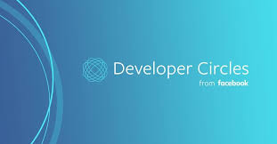
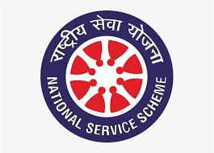

About Alekya
Alekya is currently working at Beunec as a Founding Software Engineer. She graduated with a Masters in Computer Science(MsCS) from Rutgers University during which she worked as a Software Developer Intern for Apt Data Solutions Inc, where she worked on increasing connectivity between recruiters and job seekers, aiming to eleviate the pressure of job hunts. She earned her Bachelors in Computer Science and Engineering(CSE) from BV Raju Institue of Technology, Hyderabad. She worked as a Software Cybersecurity Intern for Indian Servers, combining her knowledge of creating applications and securing them simultaneously. Her quest to understand 'How' also led her to work as an undergraduate assistant, working on shell scripting to get a deeper understanding of how exactly the internet works.
Alekya loves expanding her horizon, she is not afraid to step into unfamiliar territory. She is known for her hardworking nature and leadership skills. In her free time, Alekya loves power lifting, plyometrics, and, crochet to balance it out. She looks forward to hearing from you!
Programming Skills
-
Java
90% -
Python
90% -
JavaScript
60% -
Data Structures
80% -
C
60%
Frameworks
-
Amazon Web Services (AWS)
60% -
Spring Boot Framework
70% -
MySQL/PostgreSQL
60% -
Kubernetes Containerization
60% -
Machine Learning
40% -
HTML/CSS
40%
Tools
Java
Python
Postman
Spring Boot
Docker
Ubuntu Linux
AWS EC2
AWS Dynamo DB
Docker/Kubernetes Containerization
Django
MySQL
VS Code
IntelliJ
PostgreSQL
NoSQL/MongoDB
GitHub
Jenkins
Streamlit
Maven
Ubuntu/MacOS
Soft Skills
-
English
100% -
Telugu
100% -
Hindi
80% -
Spanish
15%
Resume
Working History
-
Software Engineer
November 2024 - Present
• Architected and developed the backend for a scalable recruitment platform using Spring Boot, MongoDB, and REST APIs, performing rigorous testing with Postman and integration tests. Currently expanding functionality by integrating the backend with the frontend.
• Designed a robust database schema, created a comprehensive site map, and built the backend architecture while revising and validating business requirements. Supervised a cybersecurity intern to ensure alignment with strategic goals and technical standards.
• Led strategic initiatives by selecting the tech stack, defining project scope, and delegating tasks to optimize development workflows and deliver high-performance solutions.
-
Software Engineer Trainee
September 2024 - Present
• Currently working on backend development, leveraging foundational requirements and schema design to ensure scalability and performance in database operations.
• Designed and implemented a MongoDB database schema, aligning project scope with stakeholder objectives through collaboration and clear requirements.
-
Software Developer Intern
May 2023 - July 2023
• Successfully worked in an Agile Environment, contributing to the creation of user-friendly web pages, resulting in an increase of 50% user traffic.
• Improved CRUD operations efficiency by ensuring high quality code using Mockito and Java testing Frameworks in Spring Boot.
• Worked closely with senior developer to perform API Testing and API Integration using Postman.
• Collaborated with company’s sales and marketing resources to implement the website features according to business needs.
-
Graduate Assistant
Mar 2021 - Present
• Working as a Research Data Analyst, helping develop reports, analysis and visualizations. Managing and designing the reporting environment, including data sources, security, and metadata. Providing technical expertise in data storage structures, data mining, and data cleansing.
•Collaborative Institutional Training Initiative (CITI Program) certified researcher for Biomedical, Privacy and Information Security, Responsible Conduct of Research, Social-Behavioral Educational Course and Conflict of Interest
-
Software Cybersecurity Intern
Mar 2021 - Present
• Used tools like Nmap, Wireshark, Metasploit, to perform pentesting on client sites.
•Documented and reported results of each security assessment, including Tips and Suggestions on how to Improve current security to accommodate discovered vulnerabilities.
•Worked with a team of experts to conduct cyber security workshops for University level student.
•Contributed in creating a Python Language Course for beginners.
-
Facebook Developer Circles, Technical Head
Jul 2018 - Apr 2020
• As Student Head for Facebook Developer Circles, facilitated community engagement by organizing hands-on workshops, hackathons, and expert-led seminars to broaden technical exposure.
• Championed collaborative projects and knowledge-sharing by facilitating spaces for brain storming and problem solving, fostering a culture of learning and practical application among members.
-
ACM Student Chapter Technical Head
Feb 2019 - August 2019

• As Technical Head of the ACM student chapter, led successful initiatives by hosting webinars, seminars, hackathons, and code expos, engaging industry experts to enhance student learning.
• Promoted research in cybersecurity and machine learning, creating an environment for collaborative learning and technical development among members.
-
Undergraduate Researcher
July 2018 - March 2019
• Configured Arduinos with Python to support a machine learning face recognition model, enhancing automation and functionality.
• Developed and implemented practical, technology-driven solutions tailored for individuals with disabilities, improving accessibility.
• Translated ideas into actionable business requirements, creating detailed documentation to guide cross-functional teams.
Education History
-
Masters in Computer Science (MSCS)
Sept 2022 - May 2024GPA: 3.9/4
Pursuing Masters in Computer Science with concentration in Full Stack Developement.
Courses: Cryptography and Cybersecurity, Optimization Methods, Parallel and Distributed Computing, Software Engineering, Artificial Intelligence, Database Management Systems, Algorithm Design & Analysis -
Bachelors of Technology (B. Tech.) in Computer Science and Engineering
Jul 2016 - May 2020CGPA: 7.1 / 10
Pursuing Bachelors Degree in Computer Science and Engineering
Courses: Data structures and Algorithms, Python and Java Programming, Operating Systems, Cloud Computing, Cybersecurity, Machine Learning, Software Engineering, Database Management Systems, Advanced Algorithms
Extra-Curricular
Alekya believes being a part of a wide range of extra-curricular activities and communities is important for an individual to be well-rounded. This allows a person to be open-minded, passionate, and have a great work-life balance, boosting their performance on all fronts. Here are some of Alekya's community involvement.
-
As Student Head for Facebook Developer Circles, facilitated community engagement by organizing hands-on workshops, hackathons, and expert-led seminars to broaden technical exposure.
-
Technical Lead & Member of local chapter of Association for Computing Machinery (ACM). AMC Student Chapters provide unique opportunities for networking, mentoring and bonding over common interests. They provide support both within the student community and to local communities outside the institution.
-
Techinal Lead of the official Technical Association for the departments of CSE and IT. The association helps the students enrich and mold their lives by hosting both technical and social events. The technical events include but are not limited to group discussions, technical demos, seminars, industry workshops, programming and gaming contests.
-

Member of National Cadet Corps (NCC) of India. The National Service Scheme (NSS) is a Central Sector Scheme of Government of India, Ministry of Youth Affairs & Sports. It provides opportunity to the student youth of 11th & 12th Class of schools at +2 Board level and student youth of Technical Institution, Graduate & Post Graduate at colleges and University level of India to take part in various Government led community service activities & programmes.
-
Vice-captain of our universities only all-girls go-kart team. Over the span of an year, our team build our own go-kart from scratch, participated in races, and won several prizes.
-

Member of National Cadet Corps (NCC) of India.
Portfolio
Planner for Women with Neuro-Divergence
Apr 2024 – Present
Web Developement
Cloud Computing
Building a Web Application using the Spring Boot Framework, storing data in PostgreSQL, and hosting data on AWS Cloud. Currently doing more research on how ADHD presents in women differently than men.
A Study of the Socio-Economic Effects on an Indian Mothers preference for a Boy Child
Aug 2023 – Oct 2023
Web Developement
Deep Learning
Developed an interactive web application using Streamlit, integrating a machine learning model trained on a large dataset to provide real-time, user-controlled input adjustments.
Explanability of AI
Mar 2023 - Apr 2023
Machine Learning
I built a machine learning model to predict tree mortality based on physical characteristics, then applied model interpretability tools to gain insights into feature contributions driving each classification.
Interactive Chat Bot
Oct 2022 – Dec 2022
Cloud Systems
Machine Learning
Developed a robust chatbot using Amazon Lex for NLP, integrated with AWS Lambda for scalable backend processing, and DynamoDB for efficient data storage and retrieval. This solution leverages AWS infrastructure to deliver dynamic, responsive interactions, ensuring high performance and scalability across multiple user queries.
Online Banking System
Jan 2019 – Jan 2019
Web Developement
Developed an Online Banking Interface using the Python-based Web Framework Django, that includes all basic functionalities.
Facial Recognition Software
Sep 2018 – Nov 2018
Machine Learning
Embedded Programming
Implemented a Python interface for Arduino hardware to facilitate integration with a machine learning facial recognition model, optimizing real-time data processing and communication between the embedded system and the AI model.
Contact Informations
- E-mail: narnealekya@gmail.com